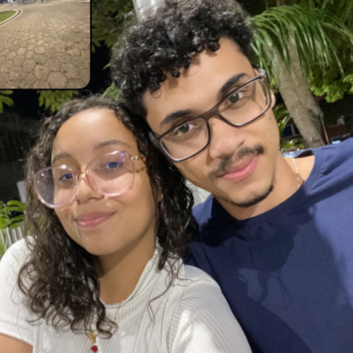
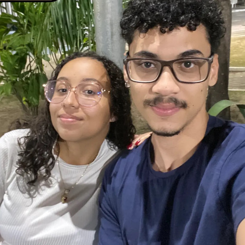
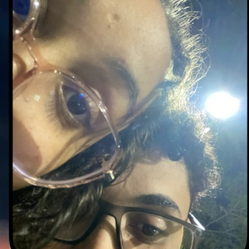
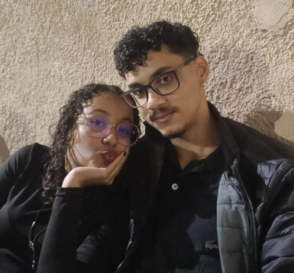

EU
Amor, você é incrivel, eu amo cada detalhezinho seu, sério. Você é espetacular, simplesmente a mulher da minha vida mesmo, com certeza a melhor escolha da minha vida, não poderia ter feito melhor. Eu te amo muito meu amor.
TE
Eu choro toda vez que penso, que eu consegui uma mulher, maravilhosa, perfeita, incrivelmente incrível, como você Suellen Silva Santos. Eu nunca, nunquinha iria imaginar que eu merecia tanto, uma mulher tão bela internamente e externamente, isso me encanta de uma forma tão, mas tão… não consigo nem descrever, acredito que o amor seja isso, explosões de emoções, que você fica procurando a palavra certa, mas não tem a palavra certa, isso é mágico, único. Eu nunca senti isso antes e fico muito feliz, muito mesmo, por sentir tudo isso por você Suellen. Eu conto os minutos para poder te ver, ver esse rostinho lindo, angelical, esses olhos mais brilhantes que a Lua, esse sorriso incrível, essa sua voz que me acalma, tão doce, o seu toque, segurar sua mão, te tocar, acariciar seu rostinho, suas bochechas, seu cabelinho, ai meu Deus, amo muito esses cachinhos, mexer neles, amo demais demais. Eu amo você.
AMO
Não sei nem mais o que falar, meu amor. Todos os dias com você são incríveis, simplesmente incrível mesmo. A melhor parte do meu dia. Eu amo ficar perto de você amor, não importa onde, quando, eu simplesmente amo independente de onde for, o tempo que for, não importa, eu vou estar feliz so de estar com você. Eu te amo muuuuuuuuuuuito meu amor.
SUELLEN
Não tenho palavras pra expressar o que eu sinto meu amor, mas nem por isso vou deixar de falar, eu te amo, te amo por me tornar a pessoa mais feliz desse mundo, sempre me apoiar, cuidar, motivar. Cada dia que passa eu me apaixono mais por você, pelo seu jeitinho, você é espetacular vei. Sou mesmo o homem mais sortudo desse Planeta, desse espaço, dessa galáxia, universo. Amo cada segundo com você, todos os dias ao seu lado é perfeito, você é demais, demais, demais aaaaaaaaa. Me encontro aos choros escrevendo esse texto, queria muito expressar o que eu sinto, mas escrever não é o meu forte, simplesmente torrei meus últimos neurônios, isso se eu tinha. Enfim, Eu Te AmO pRa CaRiMbO pRa DeDeU pRa CaCiMbO. VOCÊ É PERFEITAAAAAAAAAA.
I Love You. ❤